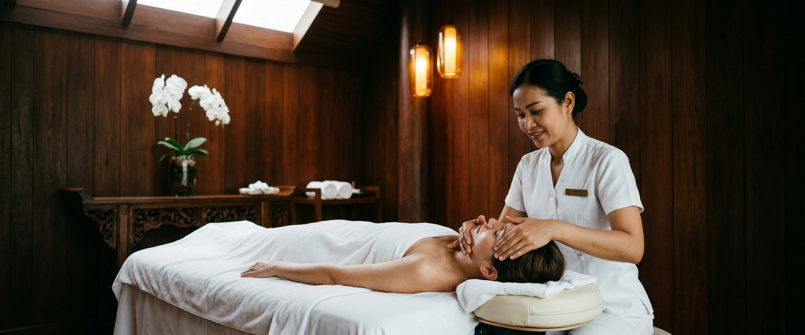
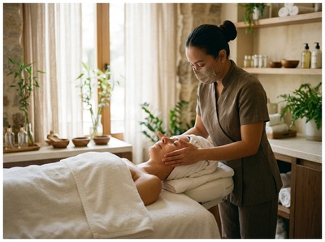
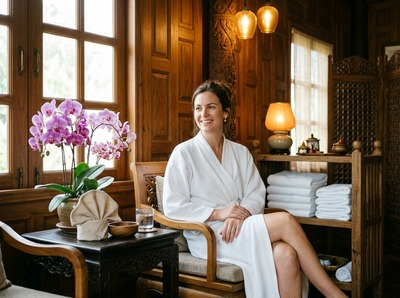

If tension accumulates at your jaw, temples, or the base of your skull, a Thai facial massage Glasgow session targets exactly those points.

This is a treatment for people who carry stress in their face and head, and who want something more considered than a basic facial.
Thai facial massage works across the face, head, and neck using acupressure, gentle kneading, lymphatic drainage strokes, and rhythmic tapping. Unlike a cosmetic facial, the focus is therapeutic. It releases the small, often tight muscles of the jaw, brow, and scalp.
Therapists apply varied pressure through the fingers and palms, following the same Sen energy line principles that underpin traditional Thai massage across the body. This gives the treatment a structural logic — not just surface contact, but deliberate work through layers of muscle and fascia.

The treatment covers the scalp, face, neck, and upper shoulders. This makes it a deeply connected experience, not just a skin treatment. You can book your Thai facial massage session online to get started.
This treatment suits anyone who holds tension in their face without realising it — people who clench their jaw, squint at screens, or carry persistent headaches.
It also works well for those in Glasgow's professional community. If you spend long hours at a desk and notice tightness creeping into your neck and temples, this treatment addresses that directly. Already familiar with Serendipity's massage treatments? This is the natural next step for your face and head.
Sessions typically run for 30 to 60 minutes. You stay fully clothed in comfortable attire, and no oils are applied unless you request them.
Your therapist works from the shoulders upward, addressing the neck, scalp, face, and forehead in a structured sequence. Pressure is soft throughout, adapted to how your face and jaw respond on the day.

After the session, most clients feel noticeably lighter through the face and head. Some feel a mild, pleasant tiredness from the deep release of facial tension. The clarity you feel is like having slept particularly well.
You can arrange your appointment online in a few minutes.
At Serendipity Massage Therapy & Wellness, every treatment is delivered by a trained therapist using techniques developed by head therapist Jariya Malone. The same standard applied to our Thai massage, hot stone massage, and sports massage sessions applies here: precise, consistent, and genuinely attentive to what your body needs.
No. Thai facial massage is performed fully clothed. You will be asked to wear something comfortable around the collar and shoulders so your therapist can access the neck and upper back. There is no need to change into a gown.
Sessions at Serendipity typically run between 30 and 60 minutes. A shorter session focuses on the face, jaw, and scalp. A longer session allows your therapist to include a more thorough neck and upper shoulder sequence, which meaningfully extends the benefit.
Most clients leave feeling light, calm, and clear-headed. Jaw tension and behind-the-eye pressure tend to ease noticeably within the session itself. Some people feel a gentle tiredness shortly after, which passes and gives way to a feeling of genuine rest.
A beauty facial focuses mainly on the skin: cleansing, exfoliation, and product application. Thai facial massage is a therapeutic treatment. The goal is to release muscle tension in the face, neck, and scalp, improve circulation, and support lymphatic drainage. No products are applied during the treatment unless agreed in advance.
For general wellbeing and tension management, once a month works well for most people. If you deal with persistent jaw tension, regular headaches, or screen-related neck strain, fortnightly sessions will produce a more consistent result. Your therapist can advise on a schedule that suits your needs. You can book your next session directly online.
Yes. The treatment uses no products by default, and all pressure is kept soft throughout. If you have any skin conditions or recent dental work, let your therapist know at the start of the session so they can adjust their approach accordingly.